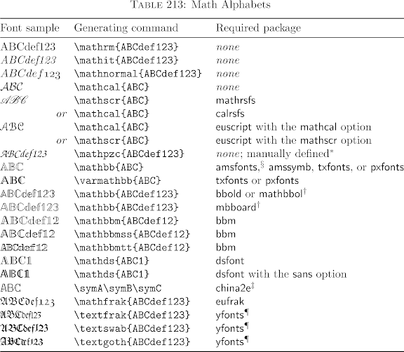

Si recuerdas la forma del símbolo que estás buscando, puedes usar detexify.kirelabs para encontrar el código LaTeX correspondiente.
Esta herramienta te permite dibujar el símbolo, y te sugerirá el código LaTeX correspondiente.
Por ejemplo, si dibujas un símbolo de raíz cuadrada, te sugerirá el código \sqrt{}.
Las diferentes tipografías a usar se comentan aquí. He proporcionado una imagen abajo. La primera columna muestra una muestra de cómo se ve, la segunda columna muestra el código para que se vea así, y la tercera columna muestra qué paquete sería necesario para que funcione (cuando no se necesita un paquete en particular, se usa la palabra "none").